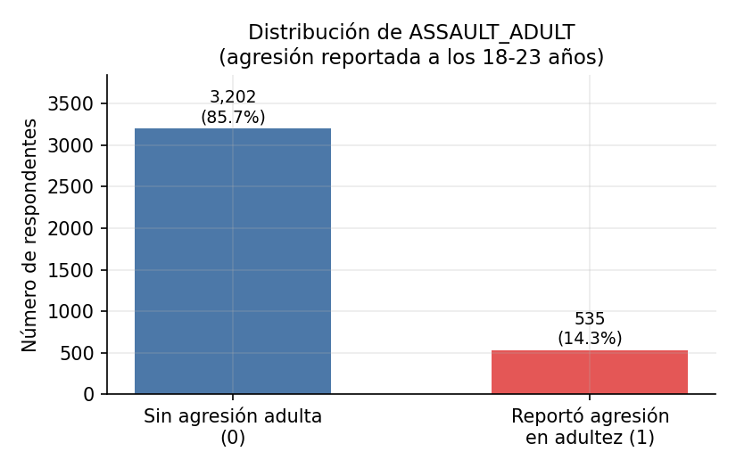
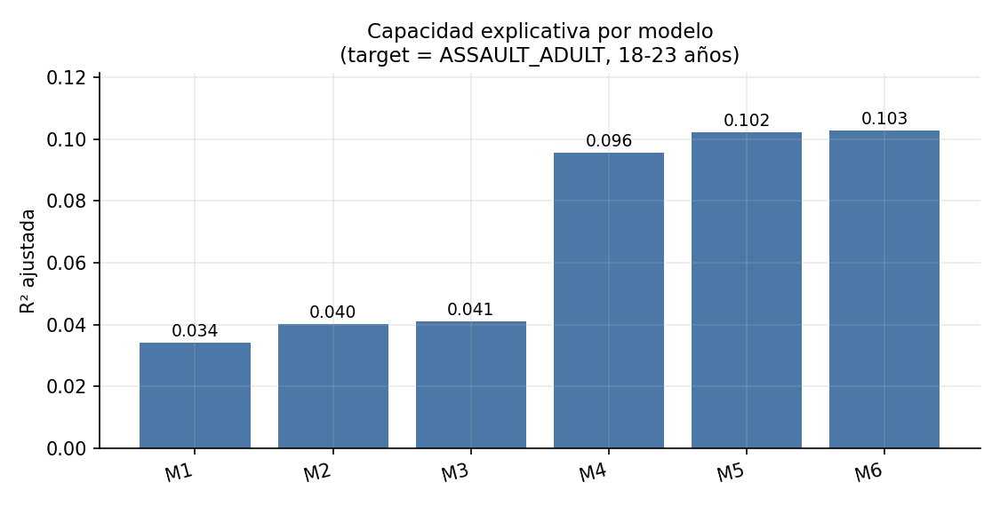
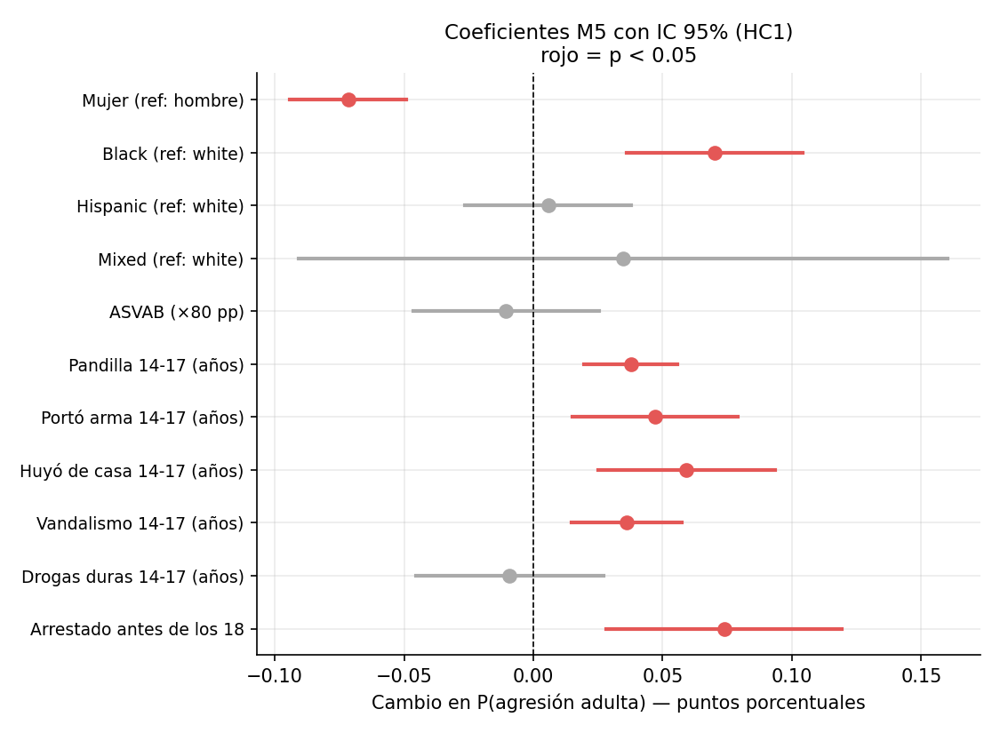
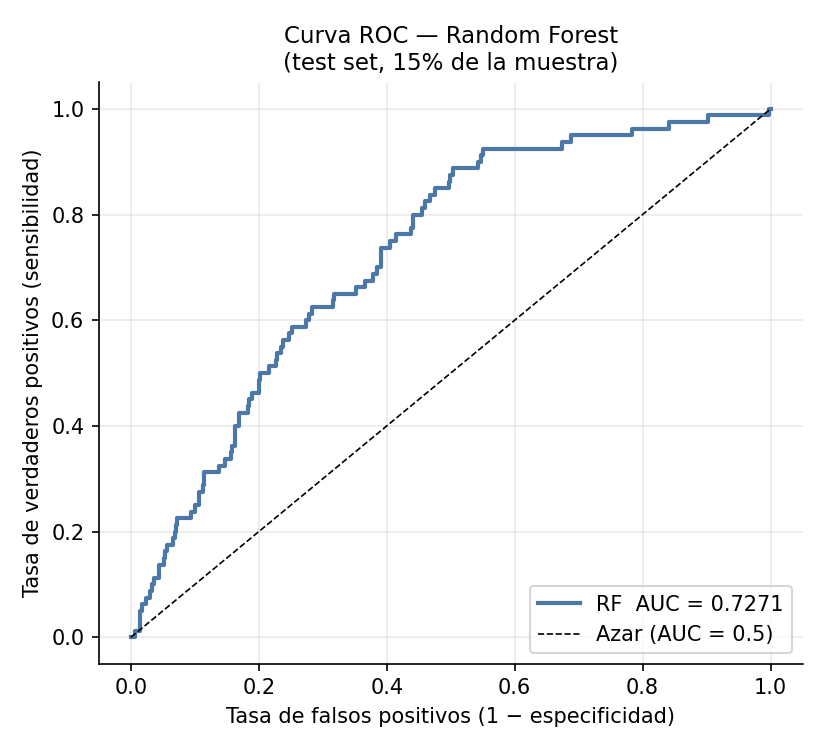
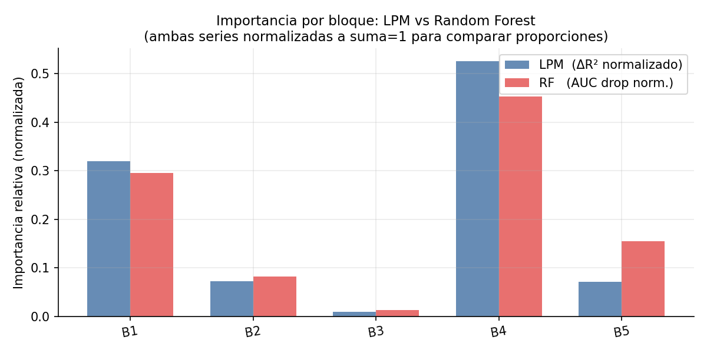

Autores
El objetivo no es estimar un efecto causal, sino ordenar la información disponible por su capacidad para predecir una trayectoria posterior.
Relevancia de política pública: la prevención de violencia necesita decidir cuándo y con qué información identificar riesgos. Si la mayor señal aparece en conductas observables durante la adolescencia, los años previos a la adultez tendrían más valor para identificar casos de riesgo alto.
La revisión de Piquero et al. (2012) concluye que la literatura tiende a mostrar continuidad de la agresión y, en menor medida, discontinuidad: la conducta agresiva temprana tiende a persistir hacia etapas posteriores.
Hipótesis comprobable: si la agresión es estable, las conductas observables en la adolescencia deberían contener señal predictiva por encima de atributos fijos (sexo, raza, origen familiar). La agresión de inicio adulto implica que ningún predictor adolescente alcanzará una predicción perfecta — por eso el trabajo ordena la información, no clasifica sin error.
Base: NLSY97 / archivo ICPSR 34562 (cohorte de 8,984 jóvenes nacidos 1980–1984; rondas 1997–2009). Las variables organizadas por edad permiten separar predictores y resultado, lo que evita el data leakage: el modelo nunca usa información contemporánea o posterior al resultado.
Por el desbalance, el AUC —y no la accuracy— es la métrica central de evaluación, y el random forest usa pesos balanceados por clase.

Sexo, raza/etnia, edad de la madre biológica, hermanos
Estructura familiar (1997), educación parental, ingreso-pobreza
Puntaje ASVAB
Daño a propiedad, robo, otros delitos, pandillas, arma, huida del hogar (14–17)
Tabaco, alcohol, marihuana, drogas duras, arresto antes de los 18
B y J son los predictores primarios: acciones observables antes del resultado adulto. D, F y C funcionan como información contextual y de control predictivo.
Modelo de probabilidad lineal (OLS) con errores robustos HC1. Coeficientes legibles como cambios en probabilidad. Bloques añadidos de forma acumulativa M₁→M₅ y comparados con pruebas F incrementales.
500 árboles, √p variables por división, mínimo 10 obs. por hoja, pesos balanceados, semilla 42. Interpretado por importancia por permutación de bloques (100 repeticiones).
Ambos modelos usan la misma muestra analítica y el mismo corte 85/15 estratificado por Y.
Los atributos de fondo explican poco. Al incorporar la conducta adolescente, el ajuste da un salto: ΔR² = 0.056 (F = 33.13; gl 7, 3715; p < 0.001).


| Variable | Cambio en prob. |
|---|---|
| Arresto antes de los 18 | +7.4 pp |
| Mujer | −7.2 pp |
| Huyó del hogar (por año) | +5.9 pp |
| Portación de arma (por año) | +4.7 pp |
| Contacto con pandillas (por año) | +3.8 pp |
| Destrucción de propiedad (por año) | +3.6 pp |
| Marihuana (por año) | +2.2 pp |
ASVAB deja de ser distinguible de cero en M₅. Tabaco, alcohol y drogas duras tampoco son significativos.
| Métrica (test) | LPM M₅ | RF |
|---|---|---|
| AUC | 0.682 | 0.727 |
| Accuracy (umbral 0.5) | 0.854 | — |
| R² | 0.036 | — |
| AUC (train) | 0.764 | 0.928 |
| AUC (out-of-bag) | — | 0.747 |
El RF gana en AUC de prueba pero sacrifica interpretabilidad individual: se usa para confirmar el orden de bloques, no para reemplazar los coeficientes.

Caída promedio de AUC al permutar cada bloque (100 repeticiones, conjunto de prueba; AUC base = 0.7271). Tabla 6 / Figura 7.

Pandillas, portación de arma, huida del hogar, destrucción de propiedad, marihuana y arresto temprano pueden activar tamizaje, apoyos y seguimiento preventivo — no diagnóstico automático, sanción anticipada ni perfil rígido de riesgo.
¿Preguntas?